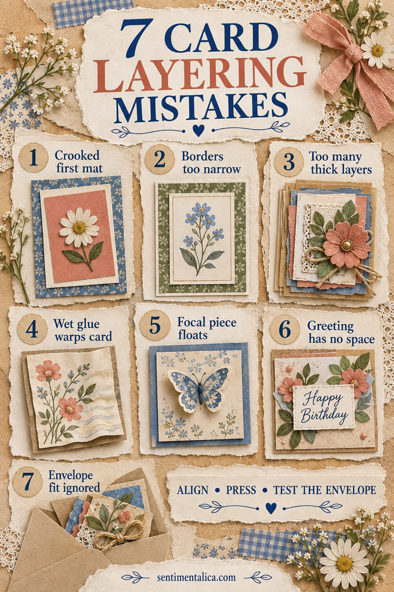
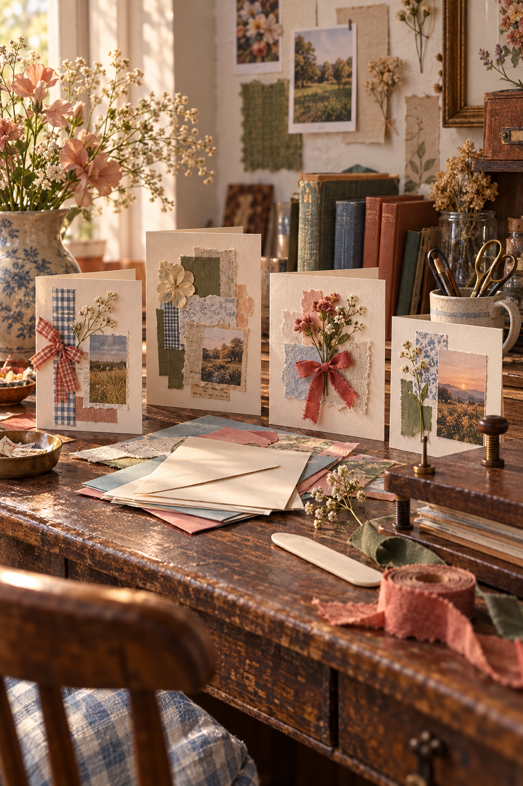

Layered cards look polished because their edges quietly agree with one another. When something feels crooked, the cause is often not the final embellishment. It began with the first mat, the adhesive or the amount of space reserved for the greeting.
You do not need expensive alignment tools. A ruler, scrap paper, a dry-fitting habit and a few calm checks are enough.
1. The first mat is crooked
Every later layer follows the first. Before gluing, place the card base against the corner of a cutting mat or squared piece of paper. Lower one edge of the mat first and check both side borders.
If liquid glue gives you adjustment time, use only a thin coat so the mat can move without skating.
2. The borders are too narrow
Very narrow borders reveal every tiny cutting difference. For most handmade cards, a 3–5 mm border is forgiving and still looks refined.
If your cuts are slightly uneven, choose an intentionally wider mat rather than trimming repeatedly until the whole design becomes too small.
3. There are too many thick layers
Foam tape, chipboard, buttons and folded ribbon accumulate quickly. Pick one raised focal layer and keep supporting layers flat.
Look at the card from the side before attaching the final piece. If the profile already feels bulky, remove rather than add.
4. Wet glue warps the card
Heavy glue introduces moisture and can bow both the mat and card base. Spread a thin, even layer, staying away from puddles at the center.
Place clean paper over the finished card and press it beneath a book while the adhesive cures. Do not close it inside an envelope while damp.
5. The focal piece floats
A flower, label or image can feel disconnected when it touches nothing. Let it overlap a mat edge, ribbon strip or quiet paper layer.
This small contact creates a visual anchor without requiring another embellishment.
6. The greeting has no space
Decorating first and squeezing in the sentiment last often makes a card feel crowded. Place a blank greeting strip during the dry layout, even if you will write or stamp it later.
Protect clear space around the words so they remain easy to read.
7. The envelope fit is ignored
A beautiful card is frustrating if it bends at the corners or needs extra postage unexpectedly. Test the unfinished card in its envelope before adding dimensional pieces.
Leave a little ease around every edge. If the decoration is too tall, consider a handmade box envelope rather than compressing it.

A simple assembly order
Cut and fold the base. Dry-fit the largest mat, focal layer and greeting. Test the envelope. Glue from largest to smallest, pressing after every flat layer. Add the single dimensional detail last.

Clean layering is less about perfect measurement than consistent decisions. Give the first mat enough border, let one element lead, and stop before the card becomes too thick to send.